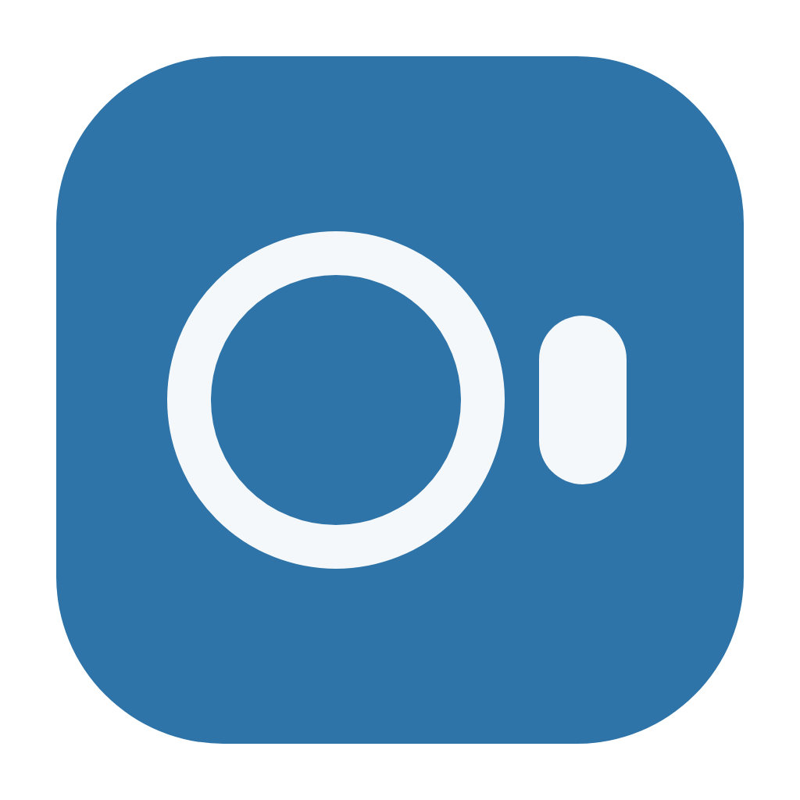
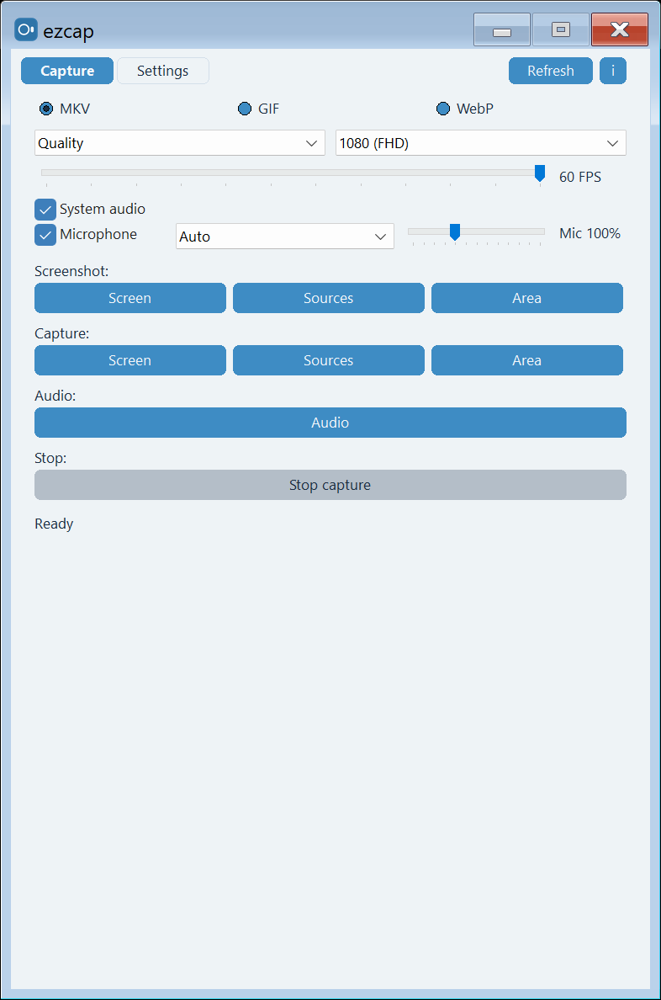
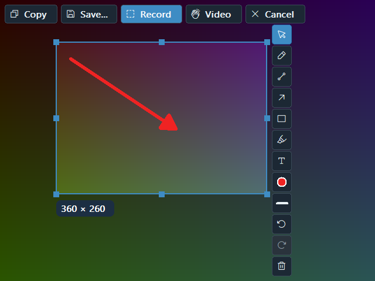
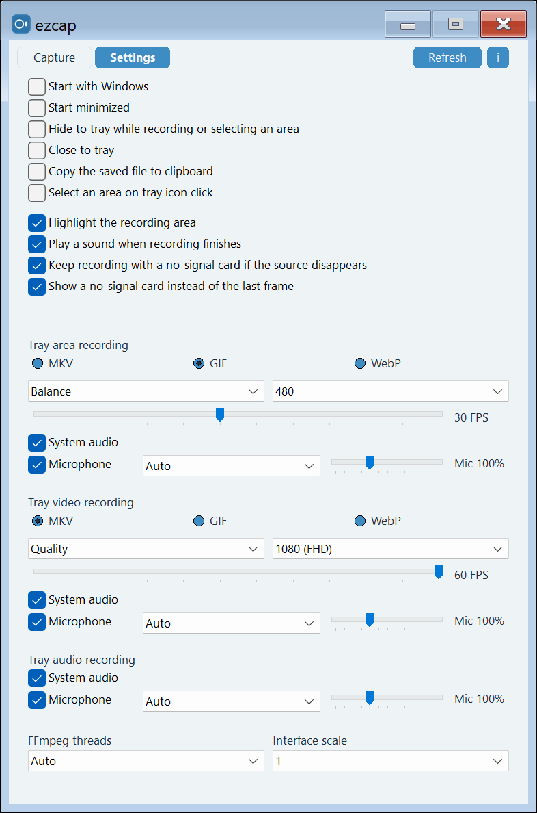

Видео с экрана
Запись всего экрана, окна или выбранной области. Качество до 1080p и 60 FPS, формат MKV.

ezcap GitHubezcap — маленькая утилита, которая всегда под рукой: запись видео в один клик, скриншоты области экрана, GIF-анимации и чистый звук. Никаких тяжёлых редакторов — нажал кнопку, получил файл.
Бесплатно · исходный код под MIT · программа с FFmpeg под GPL · без облаков и аккаунтов

Ничего лишнего — только то, чем вы пользуетесь каждый день.
Запись всего экрана, окна или выбранной области. Качество до 1080p и 60 FPS, формат MKV.
Весь экран, конкретное окно или произвольная область. Сохраняется в PNG одним нажатием.
Снимите короткую анимацию для мессенджера или статьи — ezcap сам соберёт её в GIF или WebP.
Системный звук и микрофон одновременно, с отдельным усилением микрофона. Или только аудио — тоже можно.
Выделили область — можно сразу нарисовать стрелку, пометить текстом или замазать лишнее. Потом: сохранить, скопировать или записать.
Живёт в трее: клик по значку — и запись пошла. История последних файлов с кнопками «скопировать» и «показать в папке».


Windows 10/11, 64 бит. Оба варианта собираются автоматически из исходников — хэши ниже позволяют проверить, что файл не подменили.
Классическая установка для всех пользователей системы.
ezcap-@@VERSION@@-windows-x64-setup.exeРаспакуйте архив и запустите ezcap.exe — установка не нужна.
ezcap-@@VERSION@@-windows-x64.zipВсе версии, исходники и история изменений — на GitHub ↗
Исходный код ezcap — лицензия MIT. Скачиваемая программа включает FFmpeg и x264, поэтому сам файл программы распространяется по GNU GPL версии 2 или новее. Иконки оверлея — Phosphor Icons, MIT. В архиве и в папке установки лежат COPYING, NOTICE и THIRD-PARTY.txt: там тексты для FFmpeg, x264, zlib, libwebp, LAME и крейтов Rust.